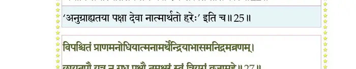
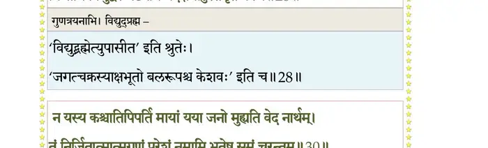
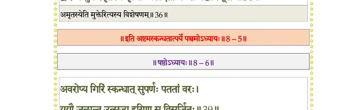

स्कन्ध 8 · अध्याय 5
श्लोक १
श्रीशुक उवाच–
राजन्नुदितमेतत् ते हरेः कर्माघनाशनम् ।
गजेन्द्रमोक्षणं पुण्यं रैवतं त्वन्तरं शृृणु।। १ ।।
राजन्नुदितमेतत् ते हरेः कर्माघनाशनम् ।
गजेन्द्रमोक्षणं पुण्यं रैवतं त्वन्तरं शृृणु।। १ ।।
श्लोक २
पञ्चमो रैवतो नाम मनुस्तापससोदरः ।
बलविन्ध्यादयस्तस्य सुता अर्जुनपूर्वकाः ।। २ ।।
बलविन्ध्यादयस्तस्य सुता अर्जुनपूर्वकाः ।। २ ।।
श्लोक ३
विभुरिन्द्रः सुरगणा राजन् भूतरयादयः ।
हिरण्यरोमा वेदशिरा ऊर्ध्वबाह्वादयो द्विजाः।। ३ ।।
हिरण्यरोमा वेदशिरा ऊर्ध्वबाह्वादयो द्विजाः।। ३ ।।
श्लोक ४
पत्नी विकुण्ठा शुभ्रस्य वैकुण्ठैः सुरसत्तमैः ।
तयोः स्वकलया जज्ञे वैकुण्ठो भगवान् स्वयम्।। ४ ।।
तयोः स्वकलया जज्ञे वैकुण्ठो भगवान् स्वयम्।। ४ ।।
श्लोक ५
वैकुण्ठः कल्पितो येन लोको लोकनमस्कृतः ।
रमया प्रार्थ्यमानेन देव्या तत्प्रियकाम्यया।। ५ ।।
रमया प्रार्थ्यमानेन देव्या तत्प्रियकाम्यया।। ५ ।।
श्लोक ६
तस्यानुभावः कथितो गुणाश्च परमोदयाः ।
भौमान् रेणून् स विममे यो विष्णोर्वर्णयेद् गुणान् ।। ६ ।।
भौमान् रेणून् स विममे यो विष्णोर्वर्णयेद् गुणान् ।। ६ ।।
श्लोक ७
षष्ठश्च चक्षुषः पुत्रश्चाक्षुषो नाम वै मनुः ।
पुरुः पुरुषसुद्युम्नप्रमुखाश्चाक्षुषात्मजाः ।। ७ ।।
पुरुः पुरुषसुद्युम्नप्रमुखाश्चाक्षुषात्मजाः ।। ७ ।।
श्लोक ८
इन्द्रो मन्द्रद्युमस्तत्र देवा आप्यादयो गणाः ।
मुनयस्तत्र वैराजहरिमद्वीरकादयः ।। ८ ।।
मुनयस्तत्र वैराजहरिमद्वीरकादयः ।। ८ ।।
श्लोक ९
तत्रापि देवः सम्भूत्यां वैराजस्याभवत् सुतः ।
अजितो नाम भगवानंशेन जगतः पतिः ।। ९ ।।
अजितो नाम भगवानंशेन जगतः पतिः ।। ९ ।।
श्लोक १०
पयोब्धिं येन निर्मथ्य सुराणां साधिता सुधा ।
भ्रममाणोऽम्भसि धृतः कूर्मरूपेण मन्दरः ।। १० ।।
भ्रममाणोऽम्भसि धृतः कूर्मरूपेण मन्दरः ।। १० ।।
श्लोक ११
राजोवाच–
यथा भगवता ब्रह्मन् मथितः क्षीरसागरः ।
यदर्थं वा यतश्चाद्रिं दधाराम्बुचरात्मना ।। ११ ।।
यथा भगवता ब्रह्मन् मथितः क्षीरसागरः ।
यदर्थं वा यतश्चाद्रिं दधाराम्बुचरात्मना ।। ११ ।।
श्लोक १२
यथाऽमृतं सुरैः प्राप्तं किमन्यदभवत् ततः ।
एतद् भगवतः कर्म वदस्व परमाद्भुतम् ।। १२ ।।
एतद् भगवतः कर्म वदस्व परमाद्भुतम् ।। १२ ।।
श्लोक १३
त्वयेत्थं कथ्यमानेन महिम्ना सात्वतां पतेः ।
नातितृप्यति मे चित्तं सुचिरं तापतापितम् ।। १३ ।।
नातितृप्यति मे चित्तं सुचिरं तापतापितम् ।। १३ ।।
श्लोक १४
सूत उवाच–
सम्पृष्टो भगवानेवं द्वैपायनसुतो द्विजाः ।
अभिनन्द्य हरेर्वीर्यमभ्याचष्टुं प्रचक्रमे ।। १४ ।।
सम्पृष्टो भगवानेवं द्वैपायनसुतो द्विजाः ।
अभिनन्द्य हरेर्वीर्यमभ्याचष्टुं प्रचक्रमे ।। १४ ।।
श्लोक १५
श्रीशुक उवाच–
यदा युद्धेऽसुरैर्देवा बाध्यमानाः शितायुधैः ।
गतासवो निपतिता नोत्तिष्ठेरन् स्म भूयशः ।। १५ ।।
यदा युद्धेऽसुरैर्देवा बाध्यमानाः शितायुधैः ।
गतासवो निपतिता नोत्तिष्ठेरन् स्म भूयशः ।। १५ ।।
श्लोक १६
यदा दुर्वासशापेन सेन्द्रा लोकास्त्रयो नृप ।
निःश्रीकाश्चाभवंस्तत्र नेशुरिज्यादिकाः क्रियाः।। १६ ।।
निःश्रीकाश्चाभवंस्तत्र नेशुरिज्यादिकाः क्रियाः।। १६ ।।
श्लोक १७
निशाम्यैतत् सुरगणा महेन्द्रवरुणादयः ।
नाध्यगच्छन् स्वयं मन्त्रैर्मन्त्रयन्तो विनिश्चयम्।। १७ ।।
नाध्यगच्छन् स्वयं मन्त्रैर्मन्त्रयन्तो विनिश्चयम्।। १७ ।।
श्लोक १८
ततो ब्रह्मसभां जग्मुर्मेरोर्मूर्धनि सर्वशः ।
सर्वं विज्ञापयाञ्चक्रुः प्रणताः परमेष्ठिने ।। १८ ।।
सर्वं विज्ञापयाञ्चक्रुः प्रणताः परमेष्ठिने ।। १८ ।।
श्लोक १९
स विलोक्येन्द्रवाय्वादीन् निःसत्वान् विगतप्रभान् ।
लोकानमङ्गलप्रायान् सुरांश्चैव यथा विभुः।। १९ ।।
लोकानमङ्गलप्रायान् सुरांश्चैव यथा विभुः।। १९ ।।
श्लोक २०
समाहितेन मनसा संस्मरन् पुरुषं परम् ।
उवाचोत्फुल्लवदनो देवान् स भगवान् परः ।। २० ।।
उवाचोत्फुल्लवदनो देवान् स भगवान् परः ।। २० ।।
श्लोक २१
अहं भवो यूयमथो सुरादयो मनुष्यतिर्यग्द्रुमघर्मजादयः ।
यस्यावतारांशकलाविसर्जिता व्रजाम सर्वे शरणं तमव्ययम् ।। २१ ।।
यस्यावतारांशकलाविसर्जिता व्रजाम सर्वे शरणं तमव्ययम् ।। २१ ।।
श्लोक २२
न यस्य वध्यो न च रक्षणीयो नोपेक्षणीयादरणीयपक्षः ।
अथापि सर्गस्थितिसंयमार्थं धत्ते रजःसत्वतमांसि काले।। २२ ।।
अथापि सर्गस्थितिसंयमार्थं धत्ते रजःसत्वतमांसि काले।। २२ ।।
भागवततात्पर्यनिर्णय

श्लोक २४
अयं तु तस्य स्थितिपालनक्षणः सत्वं जुषाणस्य भवाय देहिनाम् ।
तस्माद् व्रजामः शरणं जगद्गुरुं स्वानां स नो धास्यति शं सुरप्रियः ।।
श्रीशुक उवाच–
इत्याभाष्य सुरान् वेधाः सह देवैररिन्दम ।
अजितस्य पदं साक्षाज्जगाम तमसः परम्।। २४ ।।
तस्माद् व्रजामः शरणं जगद्गुरुं स्वानां स नो धास्यति शं सुरप्रियः ।।
श्रीशुक उवाच–
इत्याभाष्य सुरान् वेधाः सह देवैररिन्दम ।
अजितस्य पदं साक्षाज्जगाम तमसः परम्।। २४ ।।
श्लोक २५
तत्रादृष्टस्वरूपाय श्रुतपूर्वाय चाभ्यधात् ।
स्तुतिमद्भुतदैवीभिर्गीर्भिस्त्ववहितेन्द्रियः ।। २५ ।।
स्तुतिमद्भुतदैवीभिर्गीर्भिस्त्ववहितेन्द्रियः ।। २५ ।।
श्लोक २८
ब्रह्मोवाच–
अविक्रियं सत्यमनन्तमाद्यं गुहाशयं निष्कलमप्रतर्क्यम् ।
मनोग्रयाणं वचसाऽनिरुक्तं नमाम हे देव वरं वरेण्यम् ।।२६
विपश्चितं प्राणमनोधियात्मनामर्थेन्द्रियाभासमनिद्रमव्रणम् ।
छायातपौ यत्र न गृध्रपक्षौ तमक्षरं खं त्रियुगं व्रजामहे ।।२७
अजस्य चक्रं त्वजयेर्यमाणं मनोमयं पञ्चदशारमाशु ।
त्रिनाभि विद्युद्बलमष्टनेमि यदक्षमाहुस्तमृतं प्रपद्ये।। २८ ।।
अविक्रियं सत्यमनन्तमाद्यं गुहाशयं निष्कलमप्रतर्क्यम् ।
मनोग्रयाणं वचसाऽनिरुक्तं नमाम हे देव वरं वरेण्यम् ।।२६
विपश्चितं प्राणमनोधियात्मनामर्थेन्द्रियाभासमनिद्रमव्रणम् ।
छायातपौ यत्र न गृध्रपक्षौ तमक्षरं खं त्रियुगं व्रजामहे ।।२७
अजस्य चक्रं त्वजयेर्यमाणं मनोमयं पञ्चदशारमाशु ।
त्रिनाभि विद्युद्बलमष्टनेमि यदक्षमाहुस्तमृतं प्रपद्ये।। २८ ।।
भागवततात्पर्यनिर्णय

श्लोक २९
यदेकवर्णं तमसः परं सदलोकमव्यक्तमनन्तपारम् ।
आसाञ्चकारोपसुपर्णपत्रमुपासते योगरथेन धीराः।। २९ ।।
आसाञ्चकारोपसुपर्णपत्रमुपासते योगरथेन धीराः।। २९ ।।
श्लोक ४१
न यस्य कश्चातिपिपर्ति मायां यया जनो मुह्यति वेदनार्थम् ।
तं निर्जितात्मात्मगुणं परेशं नमामि भूतेषु समं चरन्तम् ।।
इमे वयं यत्प्रिययैव सृष्टाः सत्वेन सृष्टा बहिरन्तरं विभो ।
गतिं न सूक्ष्मामृषयश्च विद्महे कुतोऽसुराद्या इतरप्रधानाः ।।
पादौ महीयं स्वकृतैव यस्य चतुर्विधो यत्र हि भूतसर्गः ।
स वै महापूरुष आत्मतन्त्रः प्रसीदतां ब्रह्म महाविभूतिः ।।
अम्भस्तु यद्रेत उदारवीर्यं सिध्यन्ति जीवन्त्युत वर्धमानाः ।
लोकास्त्रयोऽथाखिललोकपालाः प्रसीदतां ब्रह्म महाविभूतिः ।।
सोमं मनो यस्य समामनन्ति दिवौकसां वै बलमन्ध आयुः ।
ईशो नगानां प्रजनः प्रजानां प्रसीदतां नः स महाविभूतिः ।।
अग्निर्मुखं यस्य तु जातवेदा जातः क्रियाकाण्डनिमित्तजन्मा ।
अन्तः समुद्रे पचतः स्वधातून् प्रसीदतां नः स महाविभूतिः ।।
यच्चक्षुरासीत् तरणिर्देवयानं त्रयीमयो ब्रह्मण एष धिष्ण्यम् ।
द्वारं च मुक्तेरमृतस्य मृत्योः प्रसीदतां नः स महाविभूतिः ।।
प्राणादभूद् यस्य चराचराणां प्राणः सहो वै बलमोजश्च वायुः ।
अन्वास्म सम्राजमिवानुगा वयं प्रसीदतां नः स महाविभूतिः।। ३७
श्रोत्राद् दिशो यस्य हृदश्च खानि प्रजज्ञिरे खं पुरुषस्य नाभ्याः ।
प्राणेन्द्रियात्मा स्वशरीरबन्धुः प्रसीदतां नः स महाविभूतिः।। ३८
बलान्महेन्द्रस्त्रिदशाः प्रसादान्मन्योर्गिरीशोऽशरणाद् विरिञ्चः ।
खेभ्यश्च छन्दांस्यृषयस्तु मेढ्रतः प्रसीदतां नः स महाविभूतिः।। ३९
श्रीर्वक्षसः पितरश्छाययाऽसन् धर्मः स्तनादितरः पृष्ठतोऽभूत् ।
द्यौर्यस्य शीर्ष्णोऽप्सरसो विहारात् प्रसीदतां नः स महाविभूतिः ।।
विप्रो मुखाद् ब्रह्म च यस्य गुह्यं राजन्य आसीद् भुजयोर्बलं च ।
ऊर्वोर्विशोऽङ्घ्रेरभवंश्च शूद्राः प्रसीदतां नः स महाविभूतिः ।। ४१ ।।
तं निर्जितात्मात्मगुणं परेशं नमामि भूतेषु समं चरन्तम् ।।
इमे वयं यत्प्रिययैव सृष्टाः सत्वेन सृष्टा बहिरन्तरं विभो ।
गतिं न सूक्ष्मामृषयश्च विद्महे कुतोऽसुराद्या इतरप्रधानाः ।।
पादौ महीयं स्वकृतैव यस्य चतुर्विधो यत्र हि भूतसर्गः ।
स वै महापूरुष आत्मतन्त्रः प्रसीदतां ब्रह्म महाविभूतिः ।।
अम्भस्तु यद्रेत उदारवीर्यं सिध्यन्ति जीवन्त्युत वर्धमानाः ।
लोकास्त्रयोऽथाखिललोकपालाः प्रसीदतां ब्रह्म महाविभूतिः ।।
सोमं मनो यस्य समामनन्ति दिवौकसां वै बलमन्ध आयुः ।
ईशो नगानां प्रजनः प्रजानां प्रसीदतां नः स महाविभूतिः ।।
अग्निर्मुखं यस्य तु जातवेदा जातः क्रियाकाण्डनिमित्तजन्मा ।
अन्तः समुद्रे पचतः स्वधातून् प्रसीदतां नः स महाविभूतिः ।।
यच्चक्षुरासीत् तरणिर्देवयानं त्रयीमयो ब्रह्मण एष धिष्ण्यम् ।
द्वारं च मुक्तेरमृतस्य मृत्योः प्रसीदतां नः स महाविभूतिः ।।
प्राणादभूद् यस्य चराचराणां प्राणः सहो वै बलमोजश्च वायुः ।
अन्वास्म सम्राजमिवानुगा वयं प्रसीदतां नः स महाविभूतिः।। ३७
श्रोत्राद् दिशो यस्य हृदश्च खानि प्रजज्ञिरे खं पुरुषस्य नाभ्याः ।
प्राणेन्द्रियात्मा स्वशरीरबन्धुः प्रसीदतां नः स महाविभूतिः।। ३८
बलान्महेन्द्रस्त्रिदशाः प्रसादान्मन्योर्गिरीशोऽशरणाद् विरिञ्चः ।
खेभ्यश्च छन्दांस्यृषयस्तु मेढ्रतः प्रसीदतां नः स महाविभूतिः।। ३९
श्रीर्वक्षसः पितरश्छाययाऽसन् धर्मः स्तनादितरः पृष्ठतोऽभूत् ।
द्यौर्यस्य शीर्ष्णोऽप्सरसो विहारात् प्रसीदतां नः स महाविभूतिः ।।
विप्रो मुखाद् ब्रह्म च यस्य गुह्यं राजन्य आसीद् भुजयोर्बलं च ।
ऊर्वोर्विशोऽङ्घ्रेरभवंश्च शूद्राः प्रसीदतां नः स महाविभूतिः ।। ४१ ।।
भागवततात्पर्यनिर्णय

श्लोक ४२
लोभोऽधरात् प्रीतिरुपर्यभूद् द्युतिर्नस्तः पशव्यं स्पर्शेन कामः ।
भ्रुवोर्यमः पक्ष्मभवस्तु कालः प्रसीदतां नः स महाविभूतिः ।। ४२ ।।
भ्रुवोर्यमः पक्ष्मभवस्तु कालः प्रसीदतां नः स महाविभूतिः ।। ४२ ।।
श्लोक ४३
द्रव्यं वयः कर्म गुणाश्च शेषं यद्योगमायापहिताः पतन्ति ।
यद् दुर्विभाव्यं प्रबुधावबोधं प्रसीदतां नः स महाविभूतिः ।। ४३ ।।
यद् दुर्विभाव्यं प्रबुधावबोधं प्रसीदतां नः स महाविभूतिः ।। ४३ ।।
श्लोक ४४
नमोऽस्तु तस्मा उपशान्तशक्तये स्वाराज्यलाभपरिपूरितात्मने ।
गुणेषु मायारचितेषु वृत्तिभिर्न सज्जमानाय नमः स्वभूतये ।। ४४ ।।
गुणेषु मायारचितेषु वृत्तिभिर्न सज्जमानाय नमः स्वभूतये ।। ४४ ।।
श्लोक ४५
स त्वं नो दर्शयात्मानमस्मत्करणगोचरः ।
प्रयतानां दिदृक्षूणां सस्मितं ते मुखाम्बुजम्।। ४५ ।।
प्रयतानां दिदृक्षूणां सस्मितं ते मुखाम्बुजम्।। ४५ ।।
श्लोक ४६
तैस्तैः स्वेच्छाकृतै रूपैः काले काले स्वयं विभो ।
कर्म दुर्विषहं यन्नो भगवान् वै करोति हि ।। ४६ ।।
कर्म दुर्विषहं यन्नो भगवान् वै करोति हि ।। ४६ ।।
श्लोक ४७
क्लेशभूर्यल्पसाराणि कर्माणि विफलानि च ।
देहिनां विषयार्तानां न तथैवार्पितं त्वयि ।। ४७ ।।
देहिनां विषयार्तानां न तथैवार्पितं त्वयि ।। ४७ ।।
श्लोक ४८
नाधमः कर्मकल्पोऽपि विफलायेश्वरार्पितः ।
कल्पते पुरुषस्यैव स ह्यात्मा दयितो हितः ।। ४८ ।।
कल्पते पुरुषस्यैव स ह्यात्मा दयितो हितः ।। ४८ ।।
श्लोक ४९
यथा हि स्कन्धशाखानां तरोर्मूलावसेचनम् ।
एवमाराधनं विष्णोः सर्वेषामात्मनश्च हि ।। ४९ ।।
एवमाराधनं विष्णोः सर्वेषामात्मनश्च हि ।। ४९ ।।
श्लोक ५०
नमस्तुभ्यमनन्ताय दुर्वितर्क्यात्मकर्मणे ।
निर्गुणाय गुणेशाय सत्वस्थाय च साम्प्रतम् ।। ५० ।।
निर्गुणाय गुणेशाय सत्वस्थाय च साम्प्रतम् ।। ५० ।।
।। इति श्रीमद्भागवते अष्टमस्कन्धे पञ्चमोऽध्यायः ।।